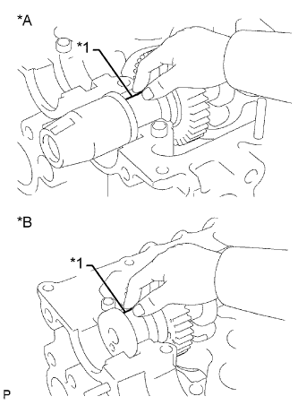
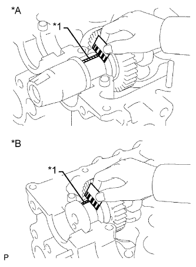
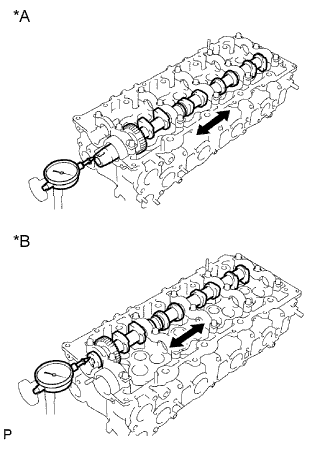

БЛОК ДВИГАТЕЛЯ (для моделей с DPF) > ПРОВЕРКА |
| 1. ПРОВЕРЬТЕ ПОДШИПНИК ШЕСТЕРНИ НАСОСА ВЫСОКОГО ДАВЛЕНИЯ |
Проверьте, не изношен ли подшипник и не имеет ли он повреждений.
При необходимости замените шестерню насоса высокого давления.
| 2. ПРОВЕРЬТЕ МАСЛЯНЫЙ ЗАЗОР ПРОМЕЖУТОЧНОЙ ШЕСТЕРНИ № 1 |
С помощью нутромера измерьте диаметр отверстия в промежуточной шестерне.
Используя микрометр, измерьте диаметр вала промежуточной шестерни.
Вычтите диаметр оси промежуточной шестерни из диаметра отверстия в промежуточной шестерне.
| 3. ПРОВЕРЬТЕ ТОЛКАТЕЛЬ КЛАПАНА |
С помощью микрометра измерьте диаметр толкателя.
С помощью индикатора часового типа для отверстий измерьте диаметр отверстия под толкатель клапана в головке блока цилиндров.
Рассчитайте масляный зазор, вычтя измеренный диаметр толкателя из измеренного диаметра отверстия под толкатель.
| 4. ПРОВЕРЬТЕ ВПУСКНОЙ КОЛЛЕКТОР |
С помощью прецизионной поверочной линейки и комплекта плоских щупов измерьте величину коробления поверхности впускного коллектора, соприкасающейся с головкой блока цилиндров.
| 5. ПРОВЕРЬТЕ ВЫПУСКНОЙ КОЛЛЕКТОР |
С помощью прецизионной поверочной линейки и комплекта плоских щупов измерьте величину коробления поверхности выпускного коллектора, соприкасающейся с головкой блока цилиндров.
| 6. ПРОВЕРЬТЕ РАСПРЕДВАЛ |
Проверьте радиальное биение.
Установите распредвал на V-образные призмы.
Индикатором часового типа измерьте радиальное биение на центральной шейке.
Проверьте рабочую высоту кулачков.
Микрометром измерьте высоту рабочей части кулачков.
Проверьте диаметр шейки распредвала.
С помощью микрометра измерьте диаметр шейки распредвала под подшипник распредвала.
Индикатором часового типа измерьте боковой зазор.
Установите 2 распредвала.
Индикатором часового типа измерьте боковой зазор.
Снимите 2 распредвала.
| 7. ПРОВЕРЬТЕ РАСПРЕДВАЛ № 2 |
Проверьте радиальное биение.
Установите распредвал на V-образные призмы.
Индикатором часового типа измерьте радиальное биение на центральной шейке.
Проверьте рабочую высоту кулачков.
Микрометром измерьте высоту рабочей части кулачков.
Проверьте диаметр шейки распредвала.
С помощью микрометра измерьте диаметр шейки распредвала под подшипник распредвала.
| 8. ПРОВЕРЬТЕ МАСЛЯНЫЙ ЗАЗОР РАСПРЕДВАЛА |
Очистите крышки подшипников и шейки.
Проверьте, нет ли следов растрескивания или зарубок на подшипниках.
Если подшипники повреждены, замените крышки подшипников и головку блока цилиндров в сборе.
Установите распредвал в головку блока цилиндров.
|  |
Положите полоски сминаемого пластичного калибра Plastigage на все шейки распредвала.
| *A | Со стороны впуска |
| *B | Со стороны выпуска |
| *1 | Сминаемый пластичный калибр Plastigage |
Установите крышки подшипников.
Снимите крышки подшипников.
|  |
Измерьте ширину сминаемого пластичного калибра Plastigage в самой широкой точке.
| *A | Со стороны впуска |
| *B | Со стороны выпуска |
| *1 | Сминаемый пластичный калибр Plastigage |
Полностью удалите сминаемый пластичный калибр (Plastigage).
Снимите распредвал.
| 9. ПРОВЕРЬТЕ ОСЕВОЙ ЗАЗОР РАСПРЕДВАЛА |
Установите распредвал.
|  |
Смещая распредвал вперед и назад, измерьте осевой зазор с помощью индикатора часового типа.
| *A | Со стороны впуска |
| *B | Со стороны выпуска |
Снимите распредвал.
| 10. ПРОВЕРЬТЕ УСТАНОВОЧНЫЙ БОЛТ ГОЛОВКИ БЛОКА ЦИЛИНДРОВ |
С помощью штангенциркуля измерьте диаметр самого удлиненного резьбового элемента в зоне измерения.
| *1 | Диапазон измерений |